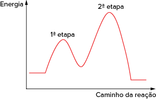

O verbo catalisar significa estimular ou acelerar uma reação. É exatamente o que faz esse dispositivo antipoluente acoplado ao escapamento dos carros, ao finalizar a combustão que não aconteceu por completo no motor. Ao passarem
pelo catalisador, os gases emitidos pela queima da gasolina – os venenosos monóxido de carbono (CO), hidrocarboneto (CH) e óxidos de nitrogênio (NOx) – são filtrados por uma estrutura em forma de colmeia. “Ela é composta de
duas substâncias químicas (paládio e molibdênio) que reagem com esses gases, convertendo-os em vapor de água e outros gases não tóxicos, como o gás carbônico (CO2) e o nitrogênio (N2)”, afirma o engenheiro Guenther Carlos Krieger
Filho, da Escola Politécnica da Universidade de São Paulo (USP). Desde 1983, a lei determina que todos os veículos brasileiros devem possuir catalisador – abre-se apenas uma exceção para carros com motor auto-suficiente, capaz
de queimar todos os gases sem deixar resíduos poluidores.
REDAÇÃO. “Como funcionam os catalisadores dos automóveis?”.
Superinteressante , 31 out. 2016. Abril Comunicações S.A. Disponível em:<https://super.abril.com.br/comportamento/como-funcionam-os-catalisadores-dos-automoveis/>. Acesso em: 2 set. 2021.
A velocidade de uma reação é influenciada pela concentração dos seus produtos?
Existem reações que só ocorrem na presença de um catalisador? Sem ele, a reação não acontece?
Como se calcula a velocidade de uma reação?
Neste capítulo serão abordadas as habilidades
EM13CNT101
e
EM13CNT205
.
EM13CNT301
EM13CNT302
Lei de velocidade
No capítulo anterior, aprendemos que a concentração dos reagentes é um dos fatores que influenciam a velocidade da reação. A lei de velocidade ou lei de ação das massas é a relação matemática entre a concentração dos reagentes
e a velocidade de dada reação, determinada em 1864 pelos químicos noruegueses Cato Maximilian Guldberg (1836-1902) e Peter Waage (1833-1900). Para uma reação elementar, ou seja, que ocorre em apenas uma etapa, a lei de velocidade
pode ser definida assim:
1 A + 2 B ➝ P
v =
k ∙ [A]1 ∙ [B]2
Sendo
v a velocidade,
k a constante cinética da reação,
[A] 1 a concentração do reagente A elevada ao seu coeficiente estequiométrico e
[B] 2 a concentração do reagente B elevada ao seu coeficiente estequiométrico. Portanto, a lei de ação das massas nos diz que a velocidade de uma reação é diretamente proporcional ao produto das concentrações em mol/L
dos reagentes elevadas aos expoentes que, no caso de uma reação elementar, são seus próprios coeficientes estequiométricos.
Para chegar até a lei de velocidade, esses químicos trabalharam analisando diferentes concentrações de um reagente e a velocidade instantânea da reação, ou seja, quanto da concentração do reagente foi consumido em um curto intervalo
de tempo. Esse trabalho experimental foi essencial para verificar se a lei de velocidade poderia ser aplicada para reações não elementares. Para isso, eles realizaram testes modificando a concentração do reagente e determinando
a velocidade da reação. Vamos acompanhar o exemplo da reação de decomposição da água oxigenada:
H2O2(aq) ➝ H2O(ℓ) 1
O2(g)
Quando a reação não é elementar, ou seja, quando ocorre em mais de uma etapa, a determinação dos expoentes da lei de velocidade é feita experimentalmente. Vamos considerar os dados experimentais da tabela acima e que a lei de velocidade da decomposição
da H2O2 é
v =
k ∙ [H2O2]
n :
Experimento 1: 0,5 5
k ∙ (0,1)
n
Experimento 2: 2,0 =
k ∙ (0,2)
n
Isolando
k em cada experimento, temos:
Como o valor de
k é igual em ambos experimentos, temos:
Ou seja,
n = 2
Logo, a lei de velocidade dessa reação é
v 5
k ∙ [H2O2]2.
Mas e se a reação não elementar tiver mais de um reagente?
Nesse caso, é preciso analisar experimentalmente a influência direta de cada reagente na velocidade da reação. Para isso, altera-se a concentração de um reagente por vez e compara-se o quanto a velocidade da reação foi modificada.
Observe o exemplo:
2 NO(g) + 2 H2(g) ➝ N2(g) + 2 H2O(g)
v =
k ∙ [R]
n ;
n =
coeficiente estequiométrico para
reações elementares . Para reações não elementares,o
n é determinado pela análise da tabela experimental.
Para analisar a influência do reagente NO devemos escolher dois experimentos em que a concentração do H2 permaneça constante e a do NO varie (experimentos 1 e 2). A concentração do NO dobrou e a velocidade da reação também dobrou.
De maneira semelhante ao que fizemos no primeiro exemplo, temos:
Ou seja,
n = 1 e o expoente de [NO] na lei da velocidade é 1.Para analisar a influência do H2 selecionamos os experimentos 1 e 3, pois a concentração do NO não se altera e a do H2 sofre variação. O valor de [H2] dobrou, enquanto
a velocidade quadruplicou:
Ou seja,
n = 2 e o expoente de [H2] na lei de velocidade é 2.
A lei de velocidade para a reação 2 NO(g) + 2 H2(g) ➝ N2(g) + 2 H2O(g) é:
v =
k ∙ [NO] ∙ [H2]2
Para determinar a unidade da constante cinética de uma reação,
k , vamos supor, por exemplo, que a reação A ➝ Produtos seja descrita pela lei de velocidade
v =
k ∙ [A], estando a unidade da velocidade em mol/L ∙ se a unidade de concentração de A em mol/L. Então:
Para esse caso, a unidade da constante será s-1 ou
.
Analise esse outro exemplo, supondo uma reação A 1 B ➝ Produtos, com lei de velocidade igual a
v =
k ∙ [A] ∙ [B] e as unidades de velocidade e concentração, respectivamente, em mol/L ∙ s e mol/L:
Para esse caso, a unidade da constante
k será
.
Denomina-se
ordem da reação a soma dos expoentes das concentrações na lei de velocidade. Então, para nosso primeiro exemplo, a decomposição de H2O2 é de ordem 2, ou segunda ordem, e o nosso segundo exemplo, 2 NO(g) + 2 H2(g) ➝
N2(g) + 2 H2O(g), é de ordem 3, ou terceira ordem. Podemos, ainda, dizer que a reação é de primeira ordem em relação ao NO e de segunda ordem em relação ao H2.
A unidade da constante cinética (
k ) é
dependente da lei de velocidade .
Questão resolvida
1
ITA-SP Velocidades iniciais (vi) de decomposição de peróxido de hidrogênio foram determinadas em três experimentos (A, B e C), conduzidos na presença de I2(aq) sob as mesmas condições, mas com diferentes concentrações
iniciais de peróxido ([H2O2]i), de acordo com os dados abaixo:
Com base nesses dados, para a reação de decomposição do peróxido de hidrogênio:
escreva a equação estequiométrica que representa a reação;
indique a ordem desta reação;
escreva a lei de velocidade da reação;
determine o valor numérico da constante de velocidade,
k ;
indique a função do I2(aq) na reação.
Resolução:
H2O2(L) ➝ H2O(L) 1
fracao_001
O2(g)
A partir da tabela fornecida, temos:
Quando a concentração do reagente triplica, a velocidade também triplica. Quando a concentração do reagente dobra, a velocidade também dobra, então concluímos que a proporção da influência do reagente na velocidade é de
1:1, logo a ordem da reação é 1.
Lei da velocidade:
v =
k ∙ [H2O2]1
Substituindo os valores da primeira linha da tabela na lei de velocidade:
2,745 =
k ∙ (0,750)1 ~
k = 3,66 s-1
I- acelera a reação de decomposição da água oxigenada, ou seja, funciona como catalisador.
A lei de velocidade de uma reação global com mecanismo conhecido será igual à
lei da velocidade da etapa lenta.
Discussão em sala
Cinética Química no cotidiano
Vamos refletir juntos em sala: Onde aplicamos a Cinética Química no cotidiano? Ao longo desta unidade, vimos que o prazo de validade dos alimentos é influenciado pela cinética das reações químicas; portanto, aplica-se na
indústria de alimentos e de bebidas. Onde mais podemos ver a cinética atuando?
Mecanismo de reações
As reações que ocorrem em mais de uma etapa são descritas por um mecanismo que mostra como os reagentes se transformam em produtos. Cada etapa de um processo global tem sua própria velocidade, ou seja, podemos encontrar etapas
lentas e etapas rápidas em um mesmo mecanismo, sendo a etapa mais lenta a determinante para a cinética da reação global. Considera-se, nesse caso, que cada etapa de um mecanismo é elementar. Portanto, conhecendo o mecanismo
da reação, podemos encontrar a lei de velocidade. Considere a reação representada a seguir.
2 NO(g) + Cℓ2(g) ➝ 2 NOCℓ(g)
Sabendo que ela ocorre em duas etapas:
2 NO(g) ➝ N2O2(g) (rápida)
Cℓ2(g) + N2O2(g) ➝ 2 NOCℓ(g) (lenta)
A lei da velocidade da reação global é a lei da velocidade da etapa lenta:
v =
k ∙ [Cℓ2] ∙ [N2O2]. Como cada etapa é tratada como reação elementar, os expoentes das concentrações de Cℓ2 e N2O2 são iguais aos coeficientes estequiométricos da reação, ou seja, 1 para cada caso.
v =
k ∙ [CL2]1 ∙ [N2O2]1, ou simplesmente
v =
k ∙ [CL2] ∙ [N2O2].
Podemos representar graficamente reações queocorrem em mais de uma etapa. Observe o exemplo para uma reação genérica.
A etapa determinante da velocidade será a mais lenta, ou seja, aquela que tiver maior energia de ativação. No exemplo, a segunda etapa é a mais lenta.

Aplicando conhecimentos
1
Considere que a seguinte reação elementar, descrita pela equação química, esteja ocorrendo:
CH4(g) 1 Cℓ2(g) ➝ H3CCℓ(g) 1 HCℓ(g)
Qual é a lei de velocidade e a ordem da reação?
v = k ∙ [CH4] ∙ [Cℓ2], ordem 1.
v = k ∙ [CH4] ∙ [Cℓ2], ordem 2.
v = k ∙ [CH4]2 ∙ [Cℓ2], ordem 2.
v = k ∙ [CH4] ∙ [Cℓ2]2, ordem 3.
v = k ∙ [CH4] ∙ [Cℓ2], ordem 3.
2
A reação representada por C2H2(g) + 2 H2(g) ➝➝ C2H6(g) ocorre em três etapas:
C2H2(g) + 2,5 O2(g) ➝ 2 CO2(g) + H2O(ℓ) (rápida)
2 H2(g) + O2(g) ➝ 2 H2O(ℓ) (lenta)
2 CO2(g) + 3 H2O(L) ➝ C2H6(g) + 3,5 O2(g)
(rápida)
Qual é a lei de velocidade da reação?
3
Uma reação hipotética entre os reagentes A e B foi estudada cineticamente em laboratório e os dados obtidos foram registrados na seguinte tabela:
Qual é a lei de velocidade da reação?
Qual é a ordem da reação?
Qual é o valor da constante cinética?
4
A reação não elementar descrita por NO2(g) + + CO(g) ➝ CO2(g) + NO(g) não tem mecanismo conhecido. Para determinar a lei de velocidade da reação, foram realizados experimentos cinéticos cujos dados estão organizados
na tabela a seguir.
Qual é a lei de velocidade?
Qual é a ordem da reação em relação ao NO2? E em relação ao CO?
O que acontece com a velocidade se a concentração de NO2 triplicar?
O que acontece com a velocidade se a concentração de CO dobrar?
5
UFRGS Para a obtenção de um determinado produto, realiza-se uma reação em 2 etapas. O caminho dessa reação é representado no diagrama abaixo.
Considere as afirmações abaixo sobre essa reação.
A etapa determinante da velocidade da reação é a etapa 2.
A reação é exotérmica.
A energia de ativação da etapa 1 é maior que a energia de ativação da etapa 2.
Quais estão corretas?
Apenas I.
Apenas II.
Apenas III.
Apenas II e III.
I, II e III.\
Consolidando saberes
1
UEL-PR 2018 A decomposição anaeróbica da matéria orgânica que ocorre durante a putrefação de cadáveres produz, dentre outros gases, o metano (CH4). Na combustão completa do CH4, na presença de oxigênio (O2), há formação
de água (H2O) e dióxido de carbono (CO2), ambos gasosos, sendo este último menos prejudicial ao meio ambiente que o CH4. Com base nos conhecimentos sobre cinética e considerando que a reação de combustão do CH4 ocorra num
sistema isolado, atribua V (verdadeiro) ou F (falso) às afirmativas a seguir.
( ) A adição de um catalisador na mistura aumenta o rendimento da reação e promove a formação de outros produtos.
( ) A diminuição do volume ocupado pela mistura gasosa resulta no aumento da velocidade da reação.
( ) A velocidade de decomposição de CH4 é a metade da velocidade de formação de H2O.
( ) A velocidade da reação dobra quando as concentrações de CH4 e O2 forem duplicadas.
( ) A velocidade de formação dos produtos, CO2(g) e H2O(g), da reação de combustão é a mesma.
Assinale a alternativa que contém, de cima para baixo, a sequência correta.
F – V – F – V – F
F – V – V – F – F
F – F – V – F – V
V – V – F – V – F
V – F – V – F – V
2
Mackenzie-SP 2018 O processo equacionado por NO(g) + O3(g) ➝ NO2(g) + O2(g) é classificado, em termos cinéticos, como elementar e de segunda ordem. Desse modo, ao serem feitos dois experimentos, ambos sob determinada
temperatura “T”, ao duplicar-se tanto a concentração do NO como do O3 em relação ao primeiro experimento, o segundo experimento terá sua velocidade
reduzida a um quarto.
reduzida à metade.
mantida constante.
duplicada.
quadruplicada.
3
UEM-PR 2018 Os seguintes dados foram medidos para a reação do monóxido de nitrogênio com hidrogênio.
2 NO(g) + 2 H2(g) ➝ N2(g) + 2 H2O(g)
Considerando observações experimentais e conhecimentos sobre o assunto, assinale o que for correto.
01.
A lei da velocidade para a reação é v = k ∙ [NO]2 ∙ [H2]2.
02.
A velocidade da reação diminui com o tempo, pois as [NO] e [H2] diminuem e, portanto, o número de colisões efetivas é menor.
04.
A velocidade de formação de N2(g) é o dobro da velocidade de consumo de NO(g).
08.
Quando a [NO] = [H2] = 0,05 mol/L, a velocidade da reação é 0,615 ∙ 1023 mol/L ∙ s.
16.
A constante de velocidade da reação não pode ser determinada a partir dos experimentos 1, 2 e 3.
Soma:
4
EsPCEx-SP 2018 O estudo da velocidade das reações é muito importante para as indústrias químicas, pois conhecê-la permite a proposição de mecanismos para uma maior produção. A tabela abaixo apresenta os resultados experimentais
obtidos para um estudo cinético de uma reação química genérica elementar.
A partir dos resultados experimentais apresentados na tabela, pode-se afirmar que a expressão da equação da lei da velocidade (v) para essa reação química é
v = k ∙ [A] ∙ [B] ∙ [C]2
v = k ∙ [A]2 ∙ [B] ∙ [C]2
v = k ∙ [A]2 ∙ [B]2 ∙ [C]
v = k ∙ [A] ∙ [B] ∙ [C]
v = k ∙ [A]0 ∙ [B] ∙ [C]
5
FMJ-SP 2020 Considere a reação genérica entre as substâncias AB e C2:
4 AB 1 C2 ➝ 2 B2 1 2 A2C
O estudo cinético dessa reação concluiu que ela ocorre em três etapas elementares:
Etapa 1: AB 1 C2 ➝ ACCB
Etapa 2: ACCB 1 AB ➝ 2 ACB
Etapa 3: 2 ACB 1 2 AB ➝ 2 B2 1 2 A2C
O gráfico mostra a variação de energia associada a cada etapa da reação e a tabela apresenta as velocidades relativas da reação para determinadas combinações de concentrações dos reagentes.
Qual das etapas da reação genérica apresentada é a mais lenta? Justifique sua resposta.
Escreva a expressão para a lei da velocidade da reação entre as substâncias AB e C2. Qual o valor da ordem global dessa reação?
6
ITA-SP 2017 A reação química genérica X ➝ Y tem lei de velocidade de primeira ordem em relação ao reagente X. À medida que a reação ocorre a uma temperatura constante, é ERRADO afirmar que:
a constante de velocidade da reação não se altera.
o tempo de meia-vida do reagente X permanece constante.
a energia de ativação da reação não se altera.
a velocidade da reação permanece constante.
a ordem da reação não se altera.
7
UFRGS 2020 A reação do relógio de iodo é bastante comum em feiras de ciências e em demonstrações didáticas. Nela, a ocorrência de várias reações que envolvem iodo e compostos, contendo enxofre em diversos estados de
oxidação, leva à formação de uma coloração azul súbita, dependente da concentração dos reagentes. Uma possibilidade de realização dessa reação usa persulfato, tiossulfato e iodeto, e, nesse caso, uma das etapas é a reação
entre o íon persulfato (S2O822) e o íon iodeto (I2), cuja velocidade de decomposição do persulfato foi determinada e encontra-se na tabela abaixo.
Assinale a alternativa que apresenta a velocidade inicial x do experimento 4, em mol ∙ L-1 ∙ s-1, tendo em vista as condições expressas acima.
0,512
2,048
2,560
6,400
8,120
8
ITA-SP 2017 Considere que a decomposição do N2O5, representada pela equação química global:
2 N2O5 ➝ 4 NO2 + O2
Apresente lei de velocidade de primeira ordem. No instante inicial da reação, a concentração de N2O5 é de 0,10 mol/L e a velocidade de consumo desta espécie é de 0,022 mol/L ? min. Assinale a opção que apresenta o valor da constante
de velocidade da reação global, em min21.
0,0022
0,011
0,022
0,11
0,22
No enem é assim
As questões selecionadas nesta seção são prioritariamente do Enem, mas questões de vestibulares diversos que apresentam características semelhantes aos itens do referido exame também foram usadas como recurso para estudo.
1
Enem 2020 A nanotecnologia pode ser caracterizada quando os compostos estão na ordem de milionésimos de milímetros, como na utilização de nanomateriais catalíticos nos processos industriais. O uso desses materiais aumenta
a eficiência da produção, consome menos energia e gera menores quantidades de resíduos. O sucesso dessa aplicação tecnológica muitas vezes está relacionado ao aumento da velocidade da reação química envolvida. O êxito da
aplicação dessa tecnologia é por causa da realização de reações químicas que ocorrem em condições de
alta pressão.
alta temperatura.
excesso de reagentes.
maior superfície de contato.
elevada energia de ativação.
2
ITA-SP A reação entre os íons brometo e bromato, em meio aquoso e ácido, pode ser representada pela seguinte equação química balanceada:
5 Br-(aq) + BrO3-(aq) + 6 H+(aq) ➝ 3 Br2(aq) + 3 H2O(ℓ)Sabendo que a velocidade de desaparecimento do íon bromato é igual a 5,63 ∙ 1026 mol/L ∙ s, assinale a alternativa
que apresenta o valor CORRETO para a velocidade de aparecimento do bromo, Br2, expressa em mol/L ∙ s.
1,69 ∙ 1025
5,63 ∙ 1026
1,90 ∙ 1026
1,13 ∙ 1026
1,80 ∙ 10216
3
Udesc Um fogão de cozinha consome 134,4 L de metano por hora, medidos nas CNTP. Nas mesmas condições, a velocidade de formação do dióxido de carbono, resultante da combustão completa do metano, é:
Com base nos dados apresentados, é correto afirmar que a velocidade média de formação da amônia será
0,10 mol/L ∙ min
0,20 mol/L ∙ min
0,30 mol/L ∙ min
0,40 mol/L ∙ min
0,60 mol/L ∙ min
5
Uepa Um dos problemas ambientais na atualidade relaciona-se com o desaparecimento da camada de ozônio na atmosfera. É importante notar que, quando desaparece o gás ozônio, aparece imediatamente o gás oxigênio de acordo
com a equação abaixo:
Considerando a velocidade de aparecimento de O2 igual a 12 mol/L ∙ s, a velocidade de desaparecimento do ozônio na atmosfera em mol/L ∙ s é:
12
8
6
4
2
6
Uespi A combustão completa do butanol é representada pela equação:
C4H9OH(ℓ) + 6 O2(g) ➝ 4 CO2(g) + = H2O(ℓ)
Sabendo que em 1 hora de reação foram produzidos 15,84 kg de gás carbônico, é correto afirmar que a velocidade da reação acima, expressa em mols de butanol consumido por minuto, é:
Dados: H = 1; C = 12; O = 16
1,5
3,0
4,5
6,0
7,0
7
Cefet-MG Em um recipiente de vidro preenchido com peróxido de hidrogênio foram inseridas pequenas porções de óxido de manganês sólido. Em seguida, tampou-se o recipiente e observou-se a formação exotérmica de bolhas
de gás oxigênio, conforme a equação seguinte.
A velocidade da decomposição do peróxido de hidrogênio é proporcional
à elevação da pressão interna do recipiente de vidro
à quantidade de matéria das substâncias líquidas da reação.
à quantidade de calor absorvida pelo gás oxigênio e pela água.
à superfície de contato das partículas de óxido de manganês.
ao número de complexos ativados formados entre o gás oxigênio e a água.
8
EsPCEx-SP
Uma amostra de açúcar exposta ao oxigênio do ar pode demorar muito tempo para reagir. Entretanto, em nosso organismo, o açúcar é consumido em poucos segundos, quando entra em contato com o oxigênio. Tal fato se deve à presença
de enzimas que agem sobre as moléculas do açúcar, criando estruturas que reagem mais facilmente com o oxigênio...
Baseado no texto acima, a alternativa que justifica corretamente a ação química dessas enzimas é:
As enzimas atuam como inibidoras de reação, por ocasionarem a diminuição da energia de ativação do processo e, consequentemente, acelerarem a reação entre o açúcar e o oxigênio.
As enzimas atuam como inibidoras de reação, por ocasionarem o aumento da energia de ativação do processo e, consequentemente, acelerarem a reação entre o açúcar e o oxigênio.
As enzimas atuam como catalisadores da reação, por ocasionarem o aumento da energia de ativação do processo, fornecendo mais energia para a realização da reação entre o açúcar e o oxigênio.
As enzimas atuam como catalisadores da reação, por ocasionarem a diminuição da energia de ativação do processo, provendo rotas alternativas de reação menos energéticas, acelerando a reação entre o açúcar e o oxigênio.
As enzimas atuam como catalisadores da reação, por ocasionarem a diminuição da energia de ativação do processo ao inibirem a ação oxidante do oxigênio, desacelerando a reação entre o açúcar e o oxigênio.
9
Enem PPL
A hematita (a–Fe2O3), além de ser utilizada para obtenção do aço, também é utilizada como um catalisador de processos químicos, como na síntese da amônia, importante matéria-prima da indústria agroquímica.
MEDEIROS, M. A. F.
Química Nova na Escola , São Paulo, v. 32, n. 3, 2010. (Adaptado).
O uso da hematita viabiliza economicamente a produção da amônia, porque
diminui a rapidez da reação.
diminui a energia de ativação da reação.
aumenta a variação da entalpia da reação.
aumenta a quantidade de produtos formados.
aumenta o tempo do processamento da reação.
10
Enem PPL 2020 O peróxido de hidrogênio é um produto secundário do metabolismo celular e apresenta algumas funções úteis, mas, quando em excesso, é prejudicial, gerando radicais que são tóxicos para as células. Para se
defender, o organismo vivo utiliza a enzima catalase, que decompõe H2O2 em H2O e O2. A energia de reação de decomposição, quando na presença e ausência da catalase, está mostrada
no gráfico.
Na situação descrita, o organismo utiliza a catalase porque ela
diminui a energia de ativação.
permite maior rendimento da reação.
diminui o valor da entalpia da reação.
consome rapidamente o oxigênio do reagente.
reage rapidamente com o peróxido de hidrogênio.
11
PUC-Rio A reação química entre dois reagentes ocorre de tal forma que, ao se triplicar a concentração do reagente A, mantendo-se fixa a concentração do reagente B, observa-se o aumento de nove vezes na velocidade inicial
de reação. Por outro lado, a variação da concentração do reagente B não acarreta mudança da velocidade inicial da reação. Assim, é correto afirmar que a equação geral da lei de velocidade da reação, onde v é a velocidade
inicial e k é a constante de velocidade, é:
 O2(g)
O2(g)